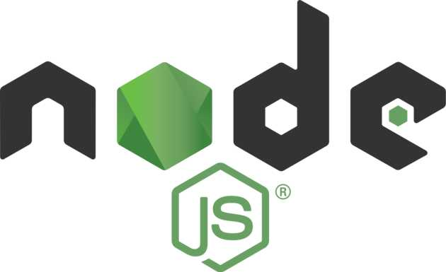

Dal 15 al 18 ottobre abbiamo partecipato ad un corso presentato da Marco Argentieri il quale ci paralto di React, Git, GitHub e Node.js.
L'argomento principale è stato React, una libreria di javascript, che ci è stato spiegato attraverso un documento contenuto in una repository preparato in precedenza dal tutor del corso.
Questo ci ha permesso al tempo stesso di iniziare a conoscere anche GitHub, un portale web che offre un’interfaccia grafica per gestire il codice che viene caricato/scaricato attraverso Git, il vero sistema di controllo versione che dà potere a questa piattaforma.
Un sistema di controllo versione è uno strumento usato da moltissimi sviluppatori perché traccia costantemente le modifiche che vengono fatte ai file inclusi nel progetto.
Node.js è, invece, uno strumento che consente di utilizzare il linguaggio Javascript sul server, permettendo così di scrivere Javascript al di fuori del browser!
Mi è stato utile conoscere questi strumenti perchè nella programmazione sono largamente utilizzati!